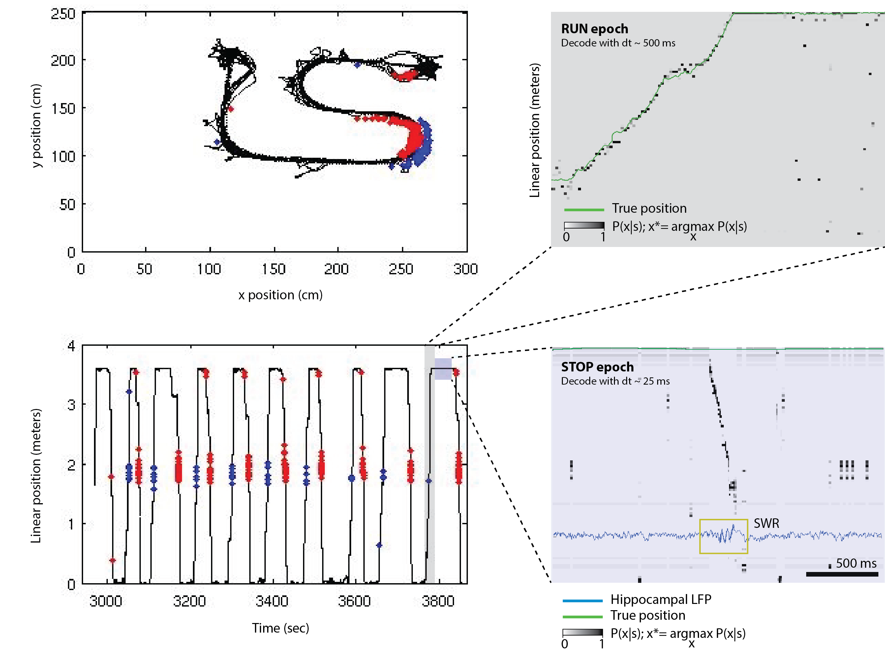
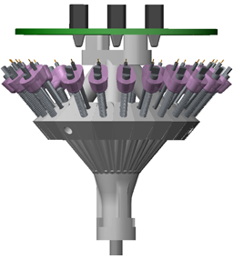
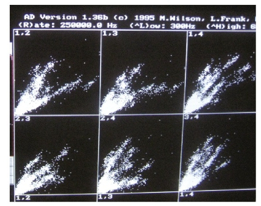
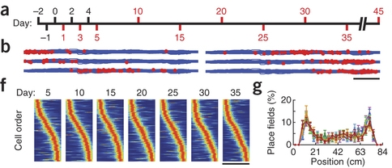
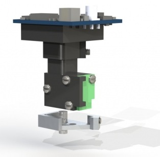

name: inverse layout: true class: center, middle, inverse --- ##.lgray[Miniscopes and/or microdrives for place-cell ensemble recordings in rats<br>] Jon Newman MWL@MIT 2016 April [homepage](http://www.mit.edu/~jpnewman/) | [github](https://github.com/jonnew) @jonnew --- layout: false ## Place cells in rat hippocampus  --- layout: false .left-column[ ## Tetrode drive arrays ] .right-column[ .pull-left[ __Microdrive array <sup>.red[1]</sup>__  ] .pull-right[ __Tetrode in the cell layer__  ] __Pros__ - _Excellent temporal precision_ - Pretty good stability - Pretty good unit separablility - Pretty good yield (up to ~200 units) - No virus injections or transgenic animals required - Minimal tissue damage .footnote[ .red[1] https://github.com/wilsonlab/CAD-Files ] ] --- layout: false .left-column[ ## Tetrode drive arrays ] .right-column[ .pull-left[ __Microdrive array <sup>.red[1]</sup>__ ] .pull-right[ __Tetrode in the cell layer__ ] __Cons__ - Construction can feel like arts and crafts - Huge amount of effort to build, implant, and adjust. - No ground truth on cell ID. - Difficult to hold units for more than a couple days - Data types are weird - Can't leverage giant development efforts like with video processing. - Analysis is the wild west - Hard to share data because no one can agree on format .footnote[ .red[1] https://github.com/wilsonlab/CAD-Files ] ] --- layout: false .left-column[ ## In-vivo calcium imaging with miniscopes ] .right-column[  __Apparent Pros__ - Excellent stability over days - No ambiguity in cell ID - Genetic specificity - Tons of existing hardware and software for processing video streams very efficiently due to computer vision, smart phones, backup cams, etc - e.g. the SerDes pair used by the miniscope -- I wish I had ICs like that would work out of the box with Intan chips... - Sharing video standardized/solved at this point .footnote[ .red[Image:] Ziv et al. Nat. Neurosci 2013 ] ] --- layout: false .left-column[ ## In-vivo calcium imaging with miniscopes ] .right-column[  __Apparent Cons__ - Haven't heard of too many people using the miniscopes in rats - Complaints about: - Viral transfection efficiency in rats - Expression time course - Imaging quality - Bad temporal resolution - More tissue damage, esp for deep targets - Not sure about potential noise sources due to expression differences across animals - Imaging seems to require a lot of light - Worry about photodamage and unintentional cuing during behavior? .footnote[ .red[Image:] http://miniscope.org/ ] ] --- layout: false .left-column[ ## Why am I interested? ] .right-column[ - More units are always better - Somewhat unsupported belief that 1000 neurons is the magic number for getting a clean picture of how ensembles are processing data in the hippocampus. - Rat CA1,2,3 have 300k-400k principle cells - Record activity in ~1/100th of them - Video data type fits in very nicely with hardware/software for real-time data analysis - Fast video processing is easy because of all the great hardware and software that are optimized for it. - In the special case of place cells, there may be clever ways to trade cell count for temporal resolution. - Circumvent issues with temporal resolution - Needs to be tested ] --- template: inverse ## End